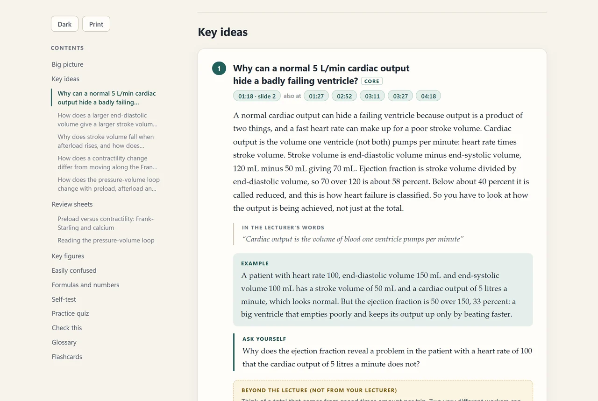
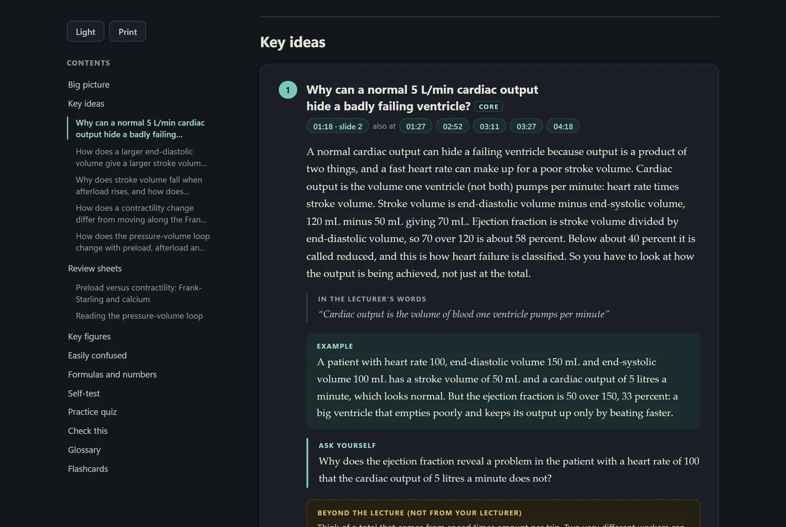
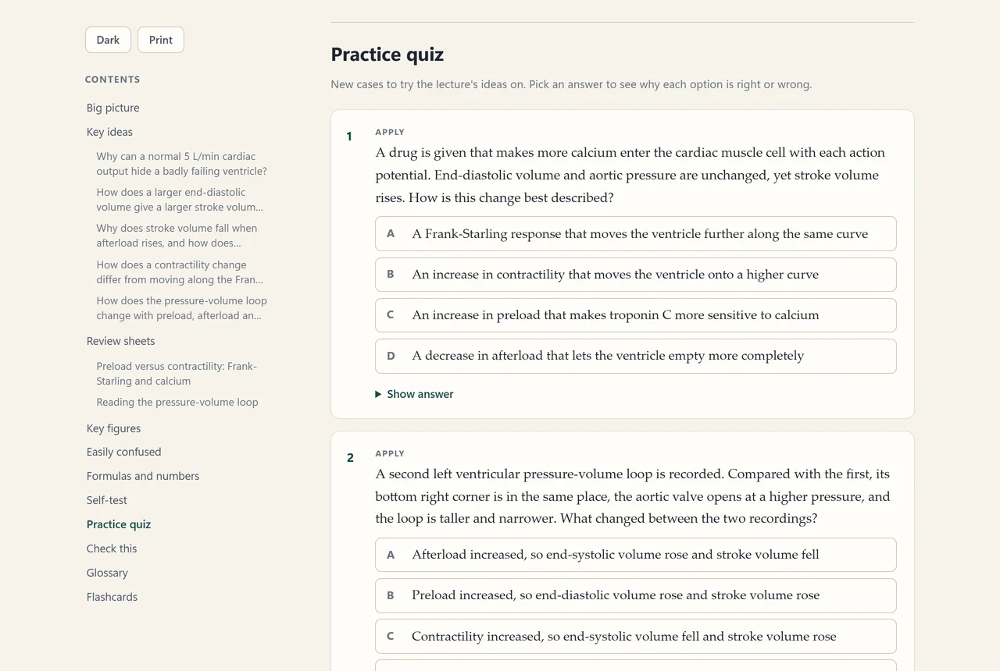
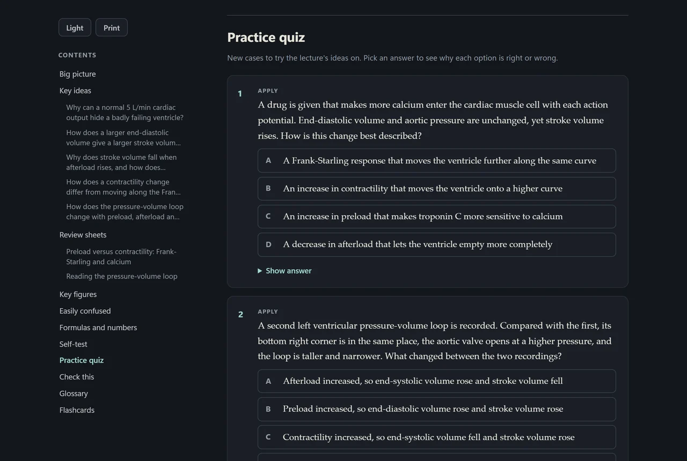

StreamSnagGuidesStudy guide and practice quiz
How to make a study guide and practice quiz from a lecture
At the end you have a study guide and a practice quiz, every item pointing to its minute and slide. Pro, written by your own AI account.
A good study guide tells you what the lecture was for, turns its main ideas into questions, and lets you test yourself. Writing one takes longer than the lecture did. Here is how StreamSnag writes one from the recording, and how to tell whether to trust it.
What a study pack contains
StreamSnag calls the whole thing a study pack. The guide opens with the big picture and what you should be able to do afterwards. Then come the key ideas, each as a question with an explanation and the lecturer's own words. After that: review sheets for the hardest topics, key figures from the slides, easily confused pairs, formulas and numbers, a self-test, a practice quiz with every wrong option explained, and a glossary. Flashcards come with it and have a guide of their own.


Every item names the minute and the slide it came from. Open a sample study guide to see all of it; AI wrote it from an invented lecture.
It runs on your own AI account
StreamSnag has no servers and does not include an AI. The pack is written by an account you choose: a Claude or ChatGPT subscription, or a key for Anthropic, OpenAI, Gemini, DeepSeek or OpenRouter. AI use is never part of the StreamSnag price, and is never paid to StreamSnag. With a Claude or ChatGPT subscription you already have there is no extra charge: the run counts toward your plan's limits. With a pay-as-you-go key, on our own runs a 64-minute lecture took about 30 requests and cost about US$1.50 on Claude Sonnet and US$0.04 to 0.08 on DeepSeek Flash; a 28-minute one cost about US$0.80 on Claude Sonnet. More on AI costs.
The steps
Save the lecture and get its transcript
The pack is written from the transcript and the text on the slides, so it needs both steps before it on the lecture's path. Slides are optional but make the guide better.
Choose an AI account
Open Settings. On the AI tab, pick the provider and sign in or paste a key. AI stays off until you do this.
Press Make study pack
It is the fourth step on the lecture's path, which “Show the path” opens. Before anything is sent, a sheet headed “Before the AI reads this lecture” shows what it makes, what it sends, to which account, and roughly how much AI use it takes. You can leave out parts you do not want, and that changes how much AI use the run takes. The button at the bottom is “Make the study pack”; “Not now” sends nothing.
Before the AI reads this lecture
Exactly what happens, before anything is sent.
- Makes
- Study guide, Deeper review sheets, Practice quiz and self-test, Flashcards
- Sends
- This sends the lecture's transcript, and the text and speaker notes of its slides, to Claude (your subscription). Pictures of the slides are not sent.
- To
- Claude (your subscription) Sent from this computer. StreamSnag has no servers.
- AI use
- In all about 20 requests from your plan's allowance.
- Cost
- Counts toward your Claude plan's limits. AI use is billed by your own provider and is never part of StreamSnag's price.
Not nowMake the study pack
Let it run
It takes one to three minutes and carries on if you close the popup. It reads the lecture, writes the guide, writes the cards and questions, then checks every card against the lecture and saves the result next to the video.
Open the guide and do the quiz
Answer the self-test from memory first. The practice quiz gives new cases to try the ideas on, tells you why each wrong option is wrong, and keeps a score.


How to tell whether to trust it
AI can write notes that sound right and are not. The pack is built to limit that: it first pulls out facts together with the lecturer's exact words, writes from those, and a last pass removes statements the lecture does not support. In the statistics sample, 61 of 65 statements passed the quote check and the rest were dropped. Where the guide explains something from outside the lecture, it does so in a box labelled “Beyond the lecture: not from your lecturer”. Those boxes can be switched off in Settings.
That lowers the error rate. It does not make it zero. So use the minutes: when an explanation surprises you, click its minute and hear the lecturer say it. The guide also has a section called Check this, which lists terms the transcript may have misheard.
Good to know
- The AI allowance runs out. A free allowance can do part of a pack and stop. StreamSnag says why it stopped. Run it again later or choose another account.
- A poor transcript. The guide can only be as good as the words it was given. Misheard names carry through, which is another reason to give it the slides.
- Your course's rules. Some universities restrict putting lecture material into AI tools. StreamSnag tells you this once. Whether to do it is your decision.
- A long lecture costs more. The estimate before each run grows with the lecture. Check it before you press the button.
Questions
Is the AI included in StreamSnag Pro?
No. Pro is US$39.97 a year, US$4.99 a month, or US$99.95 once for life for the study tools. The AI that writes the pack is your own account, never StreamSnag's: nothing extra with a Claude or ChatGPT subscription you already have, or a few cents to about US$1.50 a lecture with a pay-as-you-go key.
What is sent to the AI provider?
The transcript of that lecture and the text on its slides, with the speaker notes when the slides are a PowerPoint file. Pictures of slides and the video are never sent. You see this before each run.
Does it work without slides?
Yes. It then cites minutes only, and there are no key figures.
Try a real quiz
The sample guide's practice quiz works: answer it and see the explanations. Pro is US$39.97 a year, US$4.99 a month, or US$99.95 once for life, and your first lecture is free.
Get StreamSnag, free